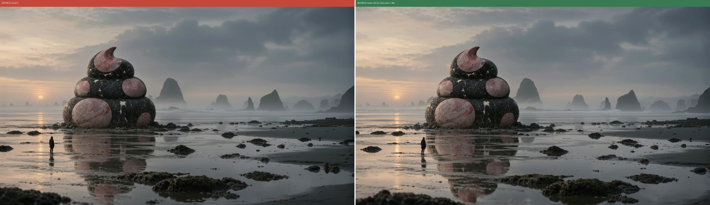
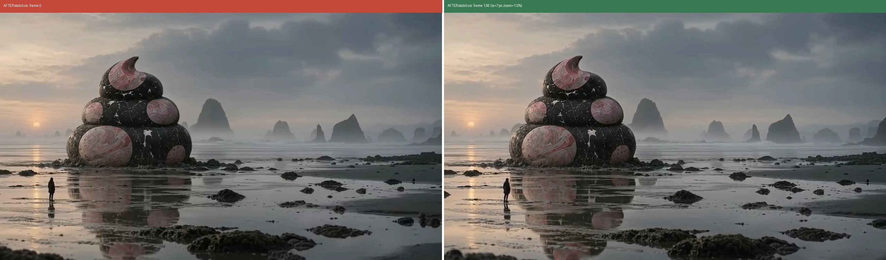
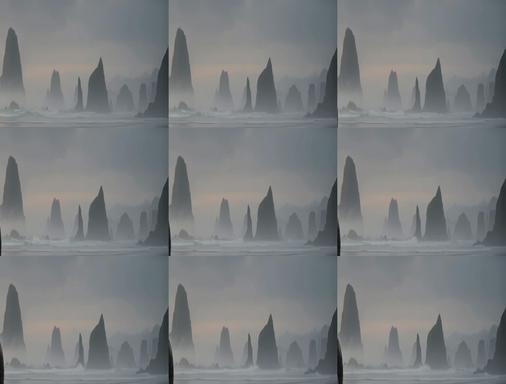

| 確認項目 | 結果 |
|---|---|
| カメラが完全固定か | 特徴点マッチングで数値測定。修正前は横23px(1.8%)ズレ・1.4%ズーム(単調増加=往復なし)。ffmpeg tripodスタビライズで横7px(0.5%)・ズーム1.0%まで圧縮、目視でほぼ一致 |
| もやが一方向に流れ続けるか(戻らないか) | オプティカルフロー解析：136コマ中116コマで右方向の動き、左方向の動きは0コマ |
| ループ向きの絵になっているか | スタビライズ後の最初と最後のフレームがほぼ同一構図(上のbefore/after画像参照) |
| ダッシュボードのSubtotal前後差を1円まで確定できたか | ブラウザ操作ツールなし＋Billing APIは403(admin権限が必要)で不可、計算値のみ。たまごさん本人にしかできない1点(下記)が必要 |